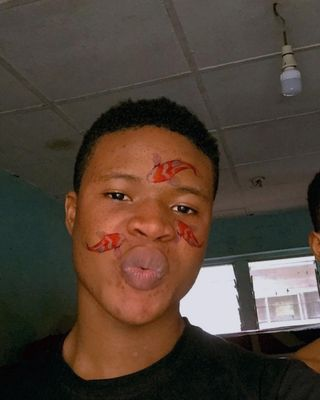

FAVOUR ONYEDIKACHI

Summary
I am a hardworking and dedicated individual with experience in Customer Service and Radio broadcasting.
Education
- National Diploma, in mass communication - Yaba college of technology (2021-2023)
Work Experience
- Radio Broadcaster Intern - Jordan Fm
Febuary 2023 - May 2023
- Answered customer inquiries via phone and email
- Resolved customer complaints and issues
- Go live on air during broadcast
Skills
- Communication skills: ⭐️⭐️⭐️⭐️
- Customer service: ⭐️⭐️⭐️⭐️⭐️
- Microsoft Office Suite: ⭐️⭐️⭐️
Awards and Certifications
- Intern of the month - Jordan Fm. (March 2023)
Other